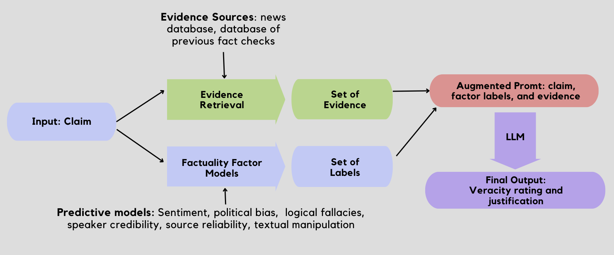
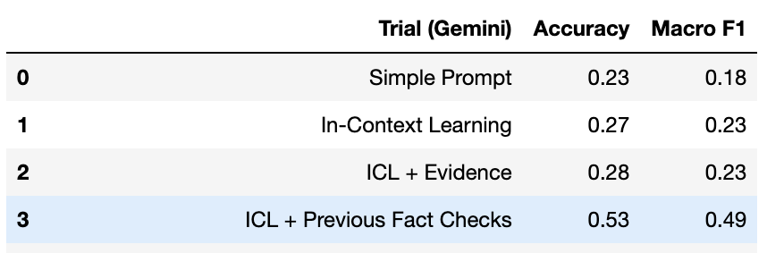
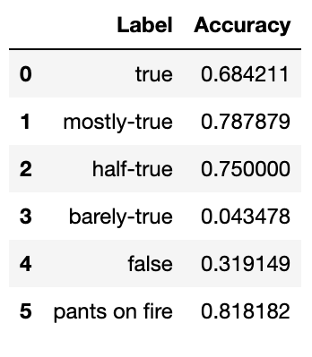
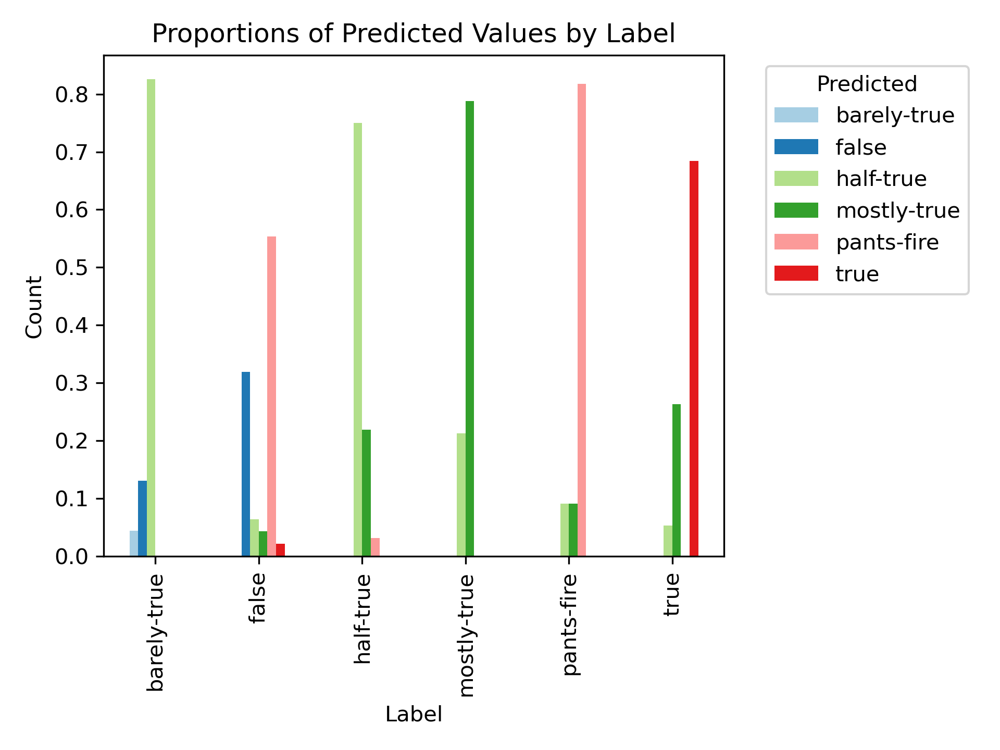

It was once said that "a lie gets halfway around the world before the truth has a chance to get its pants on." This is more true today than ever, as misinformation and disinformation are becoming increasingly pervasive and destructive, and have permanently altered the political landscape. Fact check sites such as PolitiFact and Snopes have led the charge in combating this misinformation thus far, but they are limited due to the simple fact that it takes more time to fact check claims than it does to spread misinformation.
As a result, the need for effective automated fact-checking methodologies has never been more pressing. Traditional automated fact-checking approaches, while valuable, fall short when it comes to providing justification and context for their classifications. We propose a novel approach to fact-checking which leverages Large Language Models (LLMs) within a multi-model pipeline to provide both veracity labels and informative explanations for claims.
Our approach is a 3-stage pipeline which uses an ensemble of predictive models and a LLM (Google's Gemini PRO 1.0) augmented by an evidence retrieval module.
In the prompt to our LLM, we provide the results of these models, the retrieved evidence, previous fact-checked claims and their ratings, the descriptions of the target labels, and examples of each target label
The main sources of data we used to build our pipeline are a set of fact-checked claims from PolitiFact.com and news articles scraped from NPR and CNN.
We scraped a dataset of 25,615 fact-checked claims from PolitiFact.com, which we used to build our knowledge database and train various predictive models. For each claim, the dataset contains 10 attributes of metadata, including the speaker's name, the speaker's past fact-checks, the date of the claim, a summary of relevant context, and other features. We used all the claims from prior to 2022 to build our database of previous fact-checks, and withheld the claims from 2022 and later for evaluation. This dataset was used to build select predictive models.
We scraped a selection of news articles from NPR's archive (articles from between early-2022 to early-2023) and CNN (late 2023), which we divided into one to two sentence chunks and used in our vector database.
We evaluated a number of different implementations of the pipeline, with slight differences in the factors we included in each. To avoid evaluating it on data that could be found within the database of previous fact-checks, we only evaluated it on claims made in 2022 and later.
Below are relevant results from our trials:
Our final model was one which used the retrieved evidence/fact-checks, and involved a very detailed prompt. We re-ran the trial multiple times and saw that Gemini's responses tend to vary quite a bit between trials, even for identical prompts. As a result, there was quite a bit of variance in the performance of the pipeline, and its accuracy ranged from 53% to 30% on the six-way classification task.
Below is the accuracy according to each label, taken from our best test run:
We can see that the pipeline was quite good at classifying claims of certain labels, namely "mostly-true" and "pants-on-fire" claims. The fact that it performs well on "pants-on-fire" claims is encouraging, since this means it's able to successfully identify deliberate attempts to misinform over 80% of the time. We also see that it performs abysmally on some labels (barely-true), but when we take a look at the distribution of predictions (split by the true label), the result is somewhat encouraging.
As we can see, the model has trouble distinguishing between "nearby" labels. For example, it predicted "half-true" over 80% of the time for claims which were "barely-true". This is an understandable mistake due to the fact that these labels are adjacent, and even to humans, the difference between them is somewhat subjective. It also tended to be overzealous when it came to rating claims as "pants-on-fire", as it gave this label to nearly 60% of claims that should've simply been “false”. With this in mind, the result isn't as bad as it seems at first glance, but the low overall accuracy and extreme variation between responses across trials does indicate that the model requires some tuning before it could be used in a reliable fact-check pipeline.
[1] Abdullah-All-Tanvir, Ehesas Mia Mahir, Saima Akhter, and Mohammad Rezwanul Huq: "Detecting Fake News using Machine Learning and Deep Learning Algorithms", 2019, 7th International Conference on Smart Computing Communications (ICSCC)
[2] Alhindi, Tariq, Savvas Petridis, and Smaranda Muresan: "Where is your Evidence: Improving Fact-checking by Justification Modeling", 2018, Proceedings of the First Workshop on Fact Extraction and VERification (FEVER)
[3] B, Athira A, S D Madhu Kumar, and Anu Mary Chacko: "Towards Smart Fake News Detection Through Explainable AI", 2022
[4] Choudhary, Anshika, and Anuja Arora: "Linguistic feature based learning model for fake news detection and classification", 2021, Expert Systems with Applications 169, p. 114171
[5] DeHaven, Mitchell, and Stephen Scott: "BEVERS: A General, Simple, and Performant Framework for Automatic Fact Verification", 2023
[6] Gebhard, Lukas, and Felix Hamborg: The POLUSA Dataset: 0.9M Political News Articles Balanced by Time and Outlet Popularity", 2020, Proceedings of the ACM/IEEE Joint Conference on Digital Libraries
[7] Hu, Edward J., Yelong Shen, Phillip Wallis, Zeyuan Allen-Zhu, Yuanzhi Li, Shean Wang, Lu Wang, and Weizhu Chen: "LoRA: Low-Rank Adaptation of Large Language Models", 2021
[8] Huang, Jie, and Kevin Chen-Chuan Chang: "Towards Reasoning in Large Language Models: A Survey", 2023, Findings of the Association for Computational Linguistics: ACL 2023
[9] Jawahar, Ganesh, Muhammad Abdul-Mageed, and Laks V. S. Lakshmanan: "Automatic Detection of Entity-Manipulated Text using Factual Knowledge", 2022
[10] Liao, Hao, Jiahao Peng, Zhanyi Huang, Wei Zhang, Guanghua Li, Kai Shu, and Xing Xie: "MUSER: A MUlti-Step Evidence Retrieval Enhancement Framework for Fake News Detection", 2023, Proceedings of the 29th ACM SIGKDD Conference on Knowledge Discovery and Data Mining
[11] Popat, Kashyap, Subhabrata Mukherjee, Andrew Yates, and Gerhard Weikum: "DeClarE: Debunking Fake News and False Claims using Evidence-Aware Deep Learning", 2018
[12] Sarrouti, Mourad, Asma Ben Abacha, Yassine Mrabet, and Dina Demner-Fushman: "Evidence-based Fact-Checking of Health-related Claims", 2021, Findings of the Association for Computational Linguistics: EMNLP 2021
[13] Vlachos, Andreas, and Sebastian Riedel: "Fact Checking: Task definition and dataset construction", 2014, Proceedings of the ACL 2014 Workshop on Language Technologies and Computational Social Science
[14] Wang, William Yang: ""Liar, Liar Pants on Fire": A New Benchmark Dataset for Fake News Detection", 2017, Proceedings of the 55th Annual Meeting of the Association for Computational Linguistics (Volume 2: Short Papers)